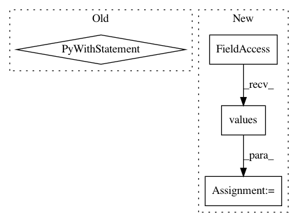

421e5bf2040da4338bd6b2e49d58f29bd91fdcf3,tests/garage/tf/q_functions/test_discrete_cnn_q_function.py,TestDiscreteCNNQFunction,test_clone,#TestDiscreteCNNQFunction#Any#Any#,263
Before Change
with mock.patch(("garage.tf.q_functions."
"discrete_cnn_q_function.CNNModel"),
new=SimpleCNNModel):
with mock.patch(("garage.tf.q_functions."
"discrete_cnn_q_function.MLPModel"),
new=SimpleMLPModel):
qf = DiscreteCNNQFunction(env_spec=self.env.spec,
filters=filters,
strides=strides,
dueling=False)
qf_clone = qf.clone("another_qf")
assert qf_clone._filters == qf._filters
assert qf_clone._strides == qf._strides
After Change
qf_clone = qf.clone("another_qf")
assert qf_clone._filters == qf._filters
assert qf_clone._strides == qf._strides
for cloned_param, param in zip(qf_clone.parameters.values(),
qf.parameters.values()):
assert np.array_equal(cloned_param, param)
In pattern: SUPERPATTERN
Frequency: 3
Non-data size: 4
Instances
Project Name: rlworkgroup/garage
Commit Name: 421e5bf2040da4338bd6b2e49d58f29bd91fdcf3
Time: 2020-08-04
Author: ahtsans@gmail.com
File Name: tests/garage/tf/q_functions/test_discrete_cnn_q_function.py
Class Name: TestDiscreteCNNQFunction
Method Name: test_clone
Project Name: statsmodels/statsmodels
Commit Name: 0d294ab613b7b6fff9bab00d2e8e94d531908d2e
Time: 2020-06-04
Author: samuel.scherrer@posteo.de
File Name: statsmodels/tsa/exponential_smoothing/ets.py
Class Name: ETSModel
Method Name: fit
Project Name: pantsbuild/pants
Commit Name: 14759e1065e307c7760299670da30f64ffdbf783
Time: 2016-08-27
Author: stuhood@gmail.com
File Name: tests/python/pants_test/engine/test_engine.py
Class Name: EngineTest
Method Name: test_multiprocess_unpickleable